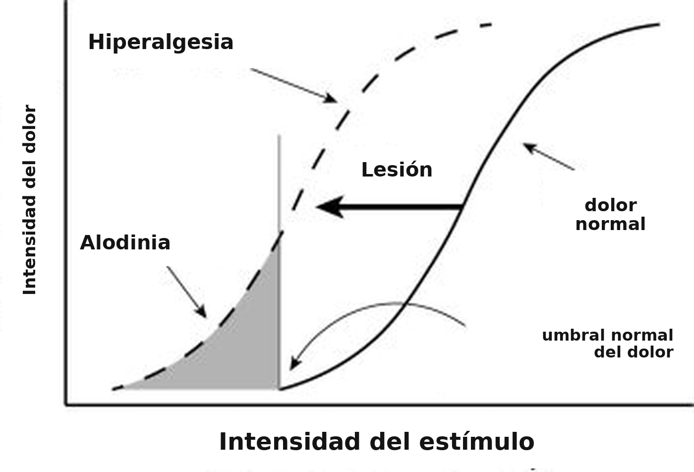
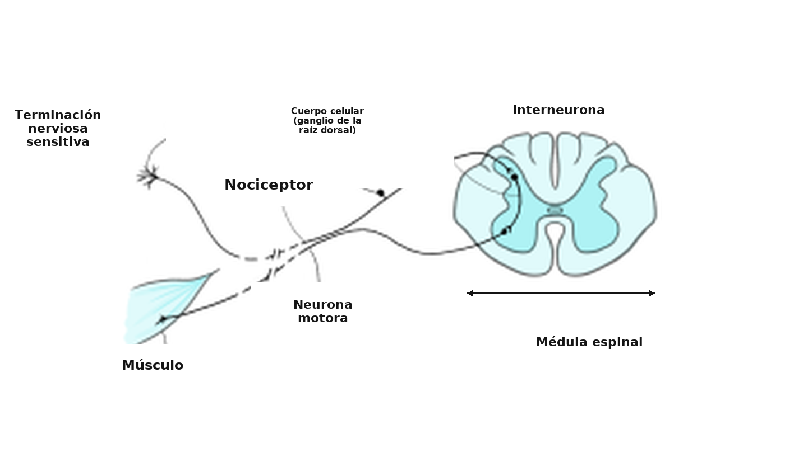
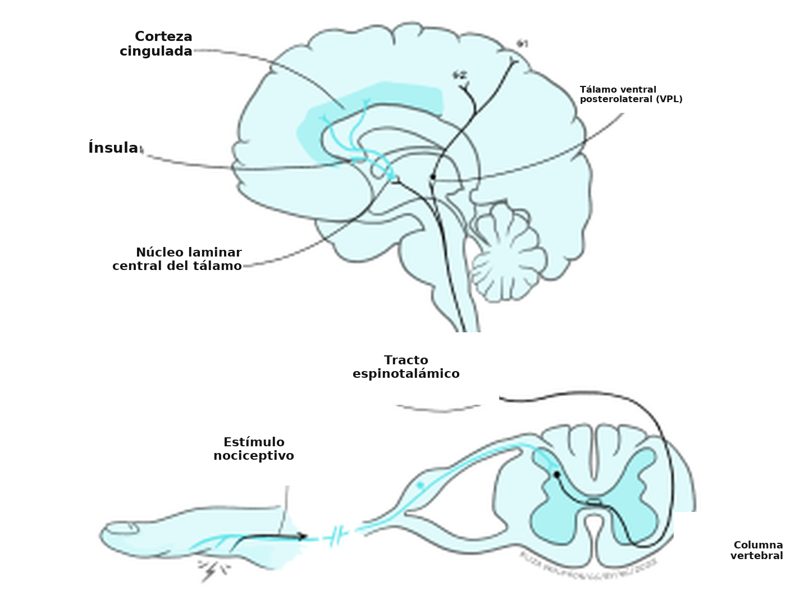
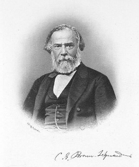
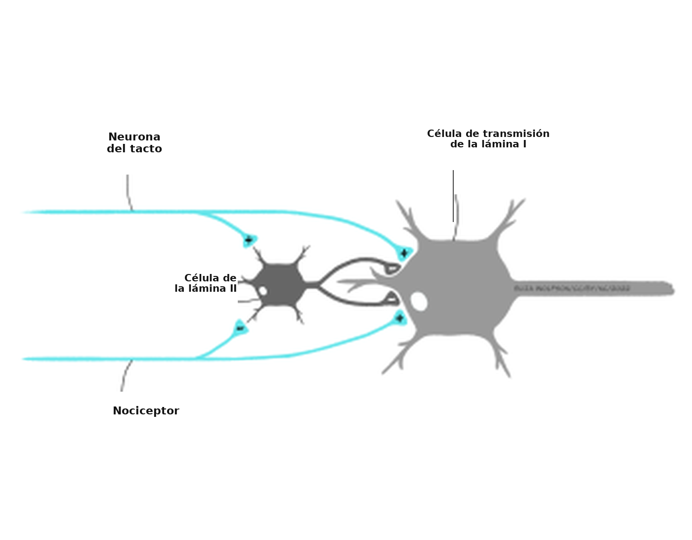
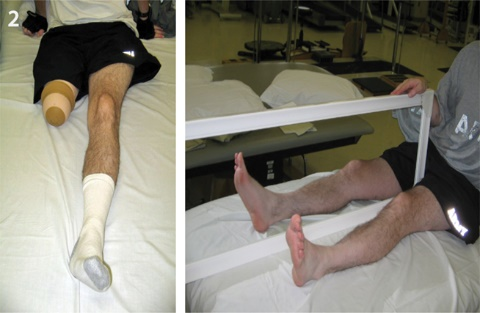

De la lesión física al desamor: sentir el dolor
Hay heridas que nunca se ven en el cuerpo y que son más profundas y dolorosas que cualquier herida que sangre.
Laurell K. Hamilton, novelista. Traducción propia.
La cita inicial muestra la complejidad del dolor. Si lo pensamos en términos simples, podemos imaginarlo como la experiencia que surge de un corte o de un moretón. Al fin y al cabo, es uno de los sentidos corporales que quedan bajo el rótulo de la somatosensación. Esa idea simple es correcta, y es el punto de partida de esta sección, pero no abarca toda la experiencia del dolor, como vas a ver enseguida. Por eso, en esta sección vamos a examinar tres tipos de dolor, empezando por el dolor nociceptivo, que es el que surge de una lesión corporal.
Nocicepción: detectar la lesión corporal
En la sección anterior aprendiste sobre cuatro tipos de neuronas modificadas que actúan como células receptoras sensitivas del tacto. En la piel hay, además, un quinto tipo de neurona modificada, encargado de detectar el daño tisular: el nociceptor. A diferencia de los receptores del tacto, los nociceptores no tienen estructuras asociadas, como cápsulas. Por eso se los llama terminaciones nerviosas libres. En la superficie de esas terminaciones hay distintos tipos de canales, de modo que pueden detectar distintos tipos de estímulos.
Teniendo en mente el daño corporal, y no el desamor ni otros tipos de dolor, ¿qué clase de estímulos podrían detectar los nociceptores?
Las respuestas pueden ser muy variadas. En el párrafo inicial mencionamos cortes y moretones, así que podrías haber pensado en estímulos que dañan el tejido o que aplican una presión muy grande. También podrías haber notado que las temperaturas extremas, o algunas sustancias químicas, pueden causar dolor. Todas esas respuestas serían correctas.
Para cada tipo de estímulo que causa daño corporal, el nociceptor tiene que detectarlo y generar un potencial de receptor mediante la transducción.
Ese proceso varía según el tipo de estímulo. El primer estímulo nocivo que se puede detectar es la presión intensa, por ejemplo un pellizco o un aplastamiento. Lo detectan los nociceptores mecánicos. Aquí la transducción es muy parecida a la que se describió para los receptores del tacto.
¿Qué tipo de canales iónicos se abren en las terminaciones nerviosas de los receptores del tacto para producir un potencial de receptor?
Se abren canales iónicos mecanosensibles, que dejan entrar iones sodio a la terminación nerviosa y generan un potencial de receptor despolarizante.
Otro tipo de transducción ocurre cuando el tejido se daña. El daño rompe las membranas celulares, de modo que los componentes químicos de la célula, que normalmente están en el espacio intracelular, se derraman hacia el espacio extracelular.
¿Podés identificar un ion que normalmente está en alta concentración dentro de las neuronas y en menor concentración afuera?
El potasio.
Entre las sustancias que pueden salir del interior de la célula están los iones potasio, decisivos para el funcionamiento de las neuronas, pero hay otros iones. Por ejemplo, cuando hay daño tisular también aumentan los iones hidrógeno en el espacio extracelular: baja el pH y aumenta la acidez. De las células dañadas también pueden liberarse sustancias como la bradicinina y las prostaglandinas.
Esas sustancias aumentan de manera directa como consecuencia del daño tisular, pero también hay cambios indirectos que modifican la composición química del espacio extracelular. Cuando el tejido se daña, el sistema inmunitario responde para proteger el cuerpo. Esa respuesta incluye la liberación de varias sustancias en la zona: histamina, serotonina y adenosín trifosfato (ATP). Con todos esos cambios, los nociceptores tienen mucho que detectar. Algunas sustancias los activan de manera directa (por ejemplo, el potasio y la bradicinina), mientras que otras los sensibilizan (por ejemplo, las prostaglandinas).
El último tipo de estímulos que puede activar los nociceptores son los que están muy calientes (> 45 °C) o muy fríos (< 5 °C). La transducción de esos estímulos depende de canales sensibles a la temperatura. Cuando detectan calor o frío, se abren y dejan entrar iones sodio y calcio al nociceptor. La consecuencia es una despolarización en forma de potencial de receptor.
¿Qué esperarías que ocurra después de que se induce el potencial de receptor?
Si el potencial de receptor es lo bastante grande, se dispara un potencial de acción.
Como es de esperar, el potencial de receptor puede disparar un potencial de acción en el nociceptor, y esa información puede transmitirse luego al sistema nervioso central. Antes de ver la vía hacia la médula espinal y el encéfalo, conviene señalar algunos rasgos del dolor nociceptivo.
En primer lugar, aunque partimos de los nociceptores de la piel, en realidad se encuentran en todo el cuerpo. Las únicas dos zonas donde no hay son el interior de los huesos y el encéfalo. Esto último explica por qué la cirugía cerebral puede hacerse con la persona despierta, como se describió en la sección anterior sobre el tacto. Otros órganos, como el corazón, los pulmones o la vejiga, sí tienen nociceptores, y su activación se denomina dolor visceral. El dolor visceral es un tipo especial de dolor nociceptivo. Es mucho más infrecuente que el dolor nociceptivo típico de los músculos, la piel o las articulaciones, que en términos técnicos se llama dolor somático. Esa rareza del dolor visceral contribuye a un fenómeno interesante: el dolor referido (Recuadro 3).
En segundo lugar, los nociceptores pueden cambiar su sensibilidad después del daño tisular, y eso da lugar a la hiperalgesia o a la alodinia. La hiperalgesia es un aumento de la sensibilidad después de una lesión (Gold & Gebhart, 2010).
Desde una perspectiva evolutiva, ¿por qué la hiperalgesia podría ser beneficiosa?
Es probable que favorezca un período más largo de reposo, para permitir la recuperación.
La hiperalgesia se considera parte de la «conducta de enfermedad», es decir, la conducta que evolucionó para dejar que una infección o una enfermedad siga su curso (Hart, 1998). La alodinia se refiere a que, después de una lesión, los nociceptores se vuelven sensibles a estímulos que no son nocivos, por ejemplo un roce suave.
La Figura 4.11 ilustra la distinción entre ambas.

Recuadro 3. Dolor referido: ¿qué es lo que duele?
El dolor referido es un fenómeno interesante: una lesión en una zona del cuerpo genera la percepción de que el dolor proviene de otra zona. En la tabla de abajo hay algunos ejemplos bien conocidos.
|
Sitio de la lesión |
Sitio donde se percibe el dolor |
|
Corazón |
Brazo izquierdo, hombro y mandíbula |
|
Garganta |
Cabeza |
|
Vesícula biliar |
Omóplato derecho |
|
Zona lumbar |
Piernas |
Tabla 2. Ejemplos de dolor referido
El dolor referido puede ser un problema, porque dificulta el diagnóstico y el tratamiento si el equipo de salud no logra localizar el origen del dolor. Algunos ejemplos son frecuentes —por ejemplo, un infarto que se presenta como dolor en el brazo y el hombro izquierdos—, de modo que se reconocen con facilidad. En otros casos, puede retrasar el tratamiento.
No hay consenso sobre el mecanismo exacto del dolor referido, pero se piensa que la información del sitio visceral y la del sitio somático —por ejemplo, el corazón y el hombro— convergen en una sola neurona y producen una señal ambigua en el encéfalo. La percepción depende tanto del estímulo sensorial (procesamiento ascendente) como de la memoria y de las experiencias previas (procesamiento descendente). Ante una señal ambigua, el encéfalo interpreta la situación según lo que más espera. Es más probable que nos hayamos lastimado el hombro que el corazón, y por eso una lesión cardíaca se percibe como un dolor en el hombro.
Vías del dolor: cómo llega la información dolorosa al encéfalo
Una vez que el nociceptor produjo un potencial de acción, la información puede transmitirse al encéfalo. Igual que las neuronas somatosensitivas del tacto, los nociceptores tienen el cuerpo celular en el ganglio de la raíz dorsal. Desde allí entran a la médula espinal. Después, la información puede seguir dos rutas principales. La más simple se muestra en la Figura 4.12: el nociceptor se conecta con una interneurona, que a su vez hace sinapsis con una neurona motora y forma un arco reflejo. Esta vía es la del reflejo de retirada ante el dolor, por ejemplo apartar la mano de un trozo de vidrio o del mango caliente de una sartén. No pasa por el encéfalo y, por lo tanto, actúa por debajo del registro consciente, para permitir una respuesta rápida que aleje el cuerpo de la fuente de dolor.

La otra vía llega al encéfalo y se muestra en la Figura 4.13. Es la que sostiene la percepción consciente del dolor, que solo ocurre cuando la señal alcanza el encéfalo. Se denomina tracto espinotalámico. Los nociceptores que alimentan esta vía terminan en las zonas superficiales de la médula espinal y hacen sinapsis con neuronas de la lámina I, también llamadas células de transmisión. Esas neuronas de segundo orden cruzan la línea media y ascienden hasta el tálamo: de ahí el nombre espinotalámico.
Con la Figura 4.13, ¿podés identificar qué núcleos talámicos forman parte del tracto espinotalámico?
Los núcleos ventroposteriores laterales (VPL) y los núcleos laminares centrales.

Desde el VPL, las neuronas de tercer orden continúan hacia la corteza somatosensitiva secundaria. Además, las neuronas que hacen sinapsis en el núcleo laminar central del tálamo se conectan con neuronas que llevan la señal hacia la ínsula y la corteza cingulada. Como ocurre con la información táctil, el dolor que proviene de la cara viaja por separado, por la vía trigeminal.
Quizá hayas notado que las vías del tacto ascienden por la médula espinal de manera ipsilateral (es decir, del mismo lado que la entrada sensitiva) y cruzan la línea media en el tronco encefálico, mientras que las vías de la nocicepción ascienden de manera contralateral (del lado opuesto), porque ya cruzaron la línea media en la médula. Esa diferencia da lugar a una afección poco habitual: el síndrome de Brown-Séquard (Recuadro 4).
Recuadro 4. Síndrome de Brown-Séquard
El síndrome de Brown-Séquard lleva el nombre del científico de la época victoriana (Figura 4.14) que describió y explicó por primera vez una lesión medular poco frecuente. Presentó el caso en la reunión anual de la British Medical Association en 1862.

En el caso que presentó, el síndrome —pérdida del tacto de un lado del cuerpo y pérdida de la sensación de dolor del otro— se debía a una lesión traumática (Shams & Arain, 2020). Sin embargo, aunque es menos frecuente, el síndrome también puede surgir de una lesión no traumática, como la esclerosis múltiple o la enfermedad por descompresión. Ocurre cuando el daño de la médula espinal es incompleto y solo se secciona un lado. El patrón inhabitual de pérdida sensitiva aparece porque la información del tacto y la del dolor ascienden por lados distintos de la línea media dentro de la médula. El tacto asciende de manera ipsilateral al estímulo, y el dolor, de manera contralateral. Cuando se corta un lado de la médula, se pierde la sensación táctil del mismo lado de la lesión y el dolor del lado opuesto.
El pronóstico de las personas con síndrome de Brown-Séquard varía según la causa y la extensión del daño. Como el síndrome implica solo un daño parcial de la médula, es posible una recuperación considerable, siempre que se eviten complicaciones como las infecciones.
Está claro que es muy importante que la información sobre una lesión corporal pueda llegar al encéfalo, pero el dolor también es una sensación desagradable, y no siempre resulta beneficioso.
¿Se te ocurre una situación en la que convenga no registrar, o no atender, una lesión corporal que estás experimentando?
Las respuestas pueden ser muchas. Quizá la más evidente es aquella en la que la supervivencia depende de poder moverse. Las lesiones en el campo de batalla se asocian con esta situación: la persona cuenta que no registró del todo sus heridas hasta estar lejos de la primera línea. Hay relatos parecidos en quienes participan de partidos deportivos.
El hecho de que haya situaciones en las que el dolor puede modularse indica que no se trata simplemente de que el nociceptor envíe al encéfalo una señal que no se puede interrumpir. De hecho, ya viste un tipo de entrada al tracto espinotalámico que puede interrumpir la señal de un estímulo nocivo antes de que llegue al encéfalo.
Pensá en la última vez que te golpeaste el codo, la cabeza o la rodilla contra algo. ¿Qué hacés de inmediato, sin pensarlo?
La reacción más habitual es frotar el lugar del golpe, es decir, aportar estimulación táctil. Suele verse cuando un niño pequeño se cae o se lastima, y quien lo cuida «se lo frota para que se le pase».
Una explicación central de por qué tocar el sitio de la lesión puede aliviar el dolor proviene de la teoría de la compuerta. Ronald Melzack y Patrick Wall la propusieron por primera vez en 1965, y describe cómo el tacto puede modular la percepción del dolor. En su teoría, Melzack y Wall plantean que en la médula espinal hay un mecanismo de compuerta que, al activarse, cierra la compuerta y puede impedir que las señales de dolor lleguen al encéfalo.
Recordá que, en la médula, el nociceptor hace sinapsis con las células de la lámina I, también llamadas células de transmisión. Sin embargo, a la médula también entran otras entradas sensitivas, en forma de neuronas receptoras del tacto. Según Melzack y Wall, la activación de los receptores del tacto puede bloquear la señal del nociceptor.
La Figura 4.15 muestra el circuito propuesto. Allí se ven el receptor del tacto y el nociceptor. Ambos hacen sinapsis con la célula de transmisión de la lámina I y con otra neurona de la lámina II de la médula. Esa neurona pequeña de la lámina II, una interneurona, es decisiva porque se piensa que actúa como la compuerta, gracias a su capacidad de inhibir la célula de transmisión. Cuando solo se activa el nociceptor, Wall y Melzack propusieron que inhibe la célula de la lámina II y, al mismo tiempo, excita la célula de transmisión. Inhibir la célula de la lámina II elimina la inhibición que esa célula ejerce normalmente sobre la célula de transmisión. En la práctica, el nociceptor excita de manera directa la célula de transmisión y, de manera indirecta, la desinhibe: es decir, le retira toda inhibición por medio de la interneurona. Así, la célula de transmisión se excita, la señal llega al encéfalo y se percibe dolor.

Si también se excita la neurona del receptor del tacto, se excita la interneurona inhibitoria de la lámina II, y eso inhibe de manera directa la célula de transmisión. En la práctica, es un ataque por dos flancos contra la excitación de la célula de transmisión: disminuye la probabilidad de que se produzca un potencial de acción y de que la señal del dolor llegue al encéfalo.
La teoría de la compuerta es solo una teoría y, como todas, tiene evidencia a favor y en contra de que sea exacta. Por ejemplo, se encontró que las interneuronas de la lámina II contienen GABA, un neurotransmisor inhibitorio, lo que respalda la teoría. Sin embargo, hasta ahora solo se encontró que los nociceptores forman sinapsis excitatorias, en contra de lo que la teoría proponía. Aunque algunos elementos puedan ser inexactos, la teoría resultó muy influyente.
Más arriba señalamos que ya habías visto la primera manera de modular las señales de dolor, cuando describimos el papel del tacto. La otra manera de alterarlas es por la acción del propio encéfalo.
Vías del dolor: control descendente desde el encéfalo
En el tronco encefálico hay varias estructuras que pueden modular la experiencia del dolor. Empezamos por la sustancia gris periacueductal (SGPA; PAG en inglés), también llamada sustancia gris central. Esta estructura se activa por la actividad del tracto espinotalámico, y la investigación mostró que su estimulación eléctrica produce un efecto analgésico potente (Fardin et al., 1984). Se piensa que aquí actúan algunos opioides endógenos.
Se piensa que esa analgesia ocurre por las conexiones entre la SGPA y dos estructuras: el locus cerúleo y los núcleos del rafe. El locus cerúleo contiene neuronas noradrenérgicas, y los núcleos del rafe, neuronas serotoninérgicas. Se piensa que ambas envían señales descendentes hacia las interneuronas de la lámina II de la médula, que a su vez suprimen las células de transmisión de la lámina I que forman el tracto espinotalámico.
¿Cuál sería el efecto de suprimir el tracto espinotalámico?
Una actividad menor en esta vía reduciría la actividad que llega al tálamo y a otras áreas del encéfalo, y así minimizaría la percepción del dolor.
Esta vía descendente es un ejemplo de retroalimentación negativa. Un estímulo nocivo excita el tracto espinotalámico, que a su vez activa la SGPA. La SGPA envía entonces una señal descendente a la médula para interrumpir, o silenciar, la señal que llega desde los nociceptores.
Ya comentamos algunas situaciones en las que conviene no experimentar toda la cualidad desagradable del dolor, por ejemplo una lesión en el campo de batalla, o cuando la supervivencia depende de poder concentrarse en llegar a un lugar seguro. Es probable que esta vía desde la SGPA sea decisiva en esas situaciones. Sin embargo, hay otras situaciones más cotidianas en las que conviene no concentrarse en el dolor y, por lo tanto, contar con una manera de modular la experiencia.
Pensá en la última vez que hiciste alguna de estas cosas: a) fuiste al odontólogo para un empaste; b) te pusieron una vacuna con una inyección; o c) te hiciste un piercing o un tatuaje. ¿Cómo manejaste el dolor de esa experiencia?
Las respuestas pueden ser de todo tipo, pero es probable que tengan algo en común: la distracción. El odontólogo puede haber puesto en el techo un póster con una imagen cargada para que la mires, o haber puesto música. Quien aplica la vacuna, o quien hace el piercing o el tatuaje, es probable que haya conversado para distraerte.
En esas situaciones experimentás analgesia atencional: la atención se dirige lejos del acontecimiento amenazante y disminuye la percepción del dolor. La investigación mostró que este tipo de analgesia involucra la SGPA, pero también varias estructuras más. Oliva et al. (2022) demostraron que la analgesia atencional involucra vías descendentes paralelas: una desde la corteza cingulada anterior (CCA) hacia el locus cerúleo, y otra desde la CCA hacia la SGPA y, desde allí, hacia una región del bulbo raquídeo. Ambas se extienden hasta la médula espinal.
Antes de dejar las vías, hay que presentar el segundo tipo de dolor. Al comienzo de la sección dijimos que íbamos a examinar tres tipos. El primero es el dolor nociceptivo, el que surge de una lesión corporal real. El segundo es el dolor neuropático. Surge del daño de los nociceptores y de las vías que transportan la información nociceptiva. Un ejemplo es el llamado síndrome talámico. Aparece cuando el tálamo se daña, por ejemplo por un accidente cerebrovascular (ACV). Las personas con este síndrome sienten un dolor intenso, urente o opresivo, ante cualquier contacto con la piel en un lugar determinado. El dolor es neuropático porque no hay un daño real en el lugar del cuerpo donde se siente la sensación, pero sí hay daño en las neuronas de las vías que normalmente llevarían al encéfalo la información dolorosa de esa región corporal.
Ahora pasamos al último tipo de dolor: el que surge sin ningún daño del cuerpo, incluidas las neuronas que procesan el dolor. Es el dolor psicógeno.
Dolor sin daño físico: el dolor psicógeno
La cita que abre esta sección indicaba que el dolor puede ir más allá del daño físico. Esa idea coincide con la experiencia cotidiana y con el uso del lenguaje. Por ejemplo, hablamos de desamor y de que ciertos acontecimientos de la vida nos quiebran o nos dañan. En esos casos puede no haber lesión física del cuerpo ni de los nervios que normalmente transportan la información nociceptiva: no hay dolor nociceptivo ni neuropático y, sin embargo, la mejor descripción de la experiencia es que duele. Eso es el dolor psicógeno: un tipo de dolor que puede atribuirse a factores psicológicos.
Hay una gama enorme de factores psicológicos que pueden producir sentimientos descritos como dolor. En el párrafo anterior mencionamos el desamor, que puede surgir de la ruptura de una relación o de un duelo, pero también hay otros factores, quizá menos evidentes. Por ejemplo, la teoría del dolor social (MacDonald & Leary, 2005) propone que quedar excluido de un grupo social, o de una relación interpersonal deseada, puede causar dolor social por el rechazo, parecido al dolor físico. También propone que ese dolor social cumple la misma función que el dolor físico: responder a cualquier amenaza para la supervivencia, incluida la reproducción. Además, hay alguna evidencia de que la exclusión social y el rechazo involucran áreas encefálicas similares.
Mediante resonancia magnética funcional (RMf), un grupo de investigación mostró una superposición entre las áreas involucradas en el dolor físico y la experiencia de exclusión social. Eisenberger y sus colegas pidieron a un grupo de personas que jugaran un partido virtual de pelota mientras se les registraba la actividad encefálica. Encontraron que la corteza cingulada anterior estaba más activa cuando se excluía a las personas participantes del juego, y que esa actividad se correlacionaba de manera positiva con el malestar que ellas mismas informaban (Eisenberger et al., 2003). Recordá que el dolor físico también activa esta zona de la corteza. Estudios posteriores mostraron que el paracetamol, que puede aliviar el dolor físico, también puede disminuir la actividad de esta región y el dolor social percibido (DeWall et al., 2010).
Esto enlaza de manera importante con la última sección sobre el dolor: su tratamiento.
Tratar el dolor: medicación y más allá
No sería adecuado hablar del dolor sin hablar de su tratamiento. Parte del dolor se resuelve sin tratamiento; otro requiere tratamiento o manejo. La importancia de tratarlo se ve al examinar las consecuencias de no hacerlo. No tratar el dolor crónico —el que persiste más de tres meses— puede alterar el estado de ánimo, favorecer trastornos de salud mental, alteraciones cognitivas e interrupción del sueño y, en conjunto, reducir la calidad de vida (Delgado-Gallén et al., 2021).
Ya leíste sobre tres tipos de dolor: nociceptivo (que abarca el somático y el visceral), neuropático y psicógeno. Con una gama tan amplia de experiencias dolorosas, no sorprende que no exista un único tratamiento eficaz para todos los tipos de dolor en todas las personas. Además, el personal de salud rara vez trata el dolor psicógeno, aunque los factores psicológicos subyacentes pueden abordarse con terapias conversacionales.
Una consideración importante al tratar el dolor es si es agudo —por ejemplo, el de un corte o incluso el de un hueso fracturado— o crónico, por ejemplo el de un daño nervioso que no puede repararse. Algunos tratamientos pueden ser eficaces a corto plazo y, por lo tanto, adecuados para el dolor agudo, pero no para el crónico, por ejemplo por los efectos adversos de la medicación prolongada.
El tratamiento del dolor agudo suele ser el más directo y a menudo se logra con fármacos. Pueden clasificarse según el punto de la vía del dolor en el que actúan:
- En la terminación nerviosa sensitiva. Fármacos como los antiinflamatorios no esteroideos (AINE; por ejemplo, el ibuprofeno) actúan en la terminación nerviosa sensitiva de los nociceptores y bloquean la sensibilización que producen las prostaglandinas.
- En el axón del nociceptor. Fármacos como los anestésicos locales (por ejemplo, la lidocaína) bloquean los canales de sodio de la membrana celular, impiden la despolarización y, por lo tanto, los potenciales de acción.
- En la médula espinal. Fármacos como los opioides, la gabapentina y la ketamina actúan en la médula, probablemente por mecanismos diversos.
- En el encéfalo. Los opioides también pueden actuar en el tálamo y en la corteza sensitiva, junto con los antidepresivos. Estos fármacos también pueden modificar el estado de ánimo: el dolor puede continuar, pero su impacto disminuye.
Algunos de estos fármacos también pueden usarse para el dolor crónico, pero hay que tener en cuenta los efectos adversos. Por ejemplo, el uso prolongado de AINE se asocia con problemas estomacales, y el uso prolongado de opioides conlleva riesgo de adicción. Por eso, las decisiones sobre el uso prolongado de fármacos tienen que tomarse con cuidado y de manera individual. Por ejemplo, el uso prolongado de opioides puede considerarse adecuado cuando el dolor se debe a una afección terminal.
Otros tratamientos, para el dolor agudo o el crónico, incluyen técnicas de estimulación como la estimulación nerviosa eléctrica transcutánea (TENS). Los equipos de TENS aplican una estimulación eléctrica de bajo voltaje en el sitio del dolor. Se piensa que ese nivel bajo de estimulación activa los receptores del tacto que, como deberías recordar de la teoría de la compuerta, podrían a su vez reducir el dolor percibido. Aunque la TENS no se usa de manera habitual en las lesiones agudas, a veces se usa para el dolor agudo del trabajo de parto y para el dolor menstrual. Una revisión sistemática de la bibliografía sobre el dolor del parto, con datos de 1671 mujeres, encontró poca diferencia entre el dolor percibido por quienes recibían TENS y el de los grupos de control, que no la recibían (Dowswell et al., 2009). En cambio, los resultados para el dolor menstrual son más favorables: con datos de 260 personas, la TENS, comparada con una condición de TENS simulada (es decir, el equipo está conectado pero apagado), produjo un alivio del dolor estadísticamente significativo (Arik et al., 2022).
Los estudios sobre la eficacia de la TENS en el dolor crónico examinaron distintas afecciones. Por ejemplo, una revisión de la bibliografía sobre la osteoartritis de rodilla —una afección que afecta al 16 % de las personas mayores de 15 años en el mundo (Cui et al., 2020)— encontró que la TENS era eficaz para reducir el dolor y mejorar la capacidad de caminar (Wu et al., 2022).
También pueden usarse abordajes quirúrgicos para tratar el dolor crónico. Cualquier cirugía conlleva riesgos y, por lo tanto, este tipo de tratamiento solo se usa en casos extremos. Una situación en la que puede usarse es el dolor intratable, presente en hasta el 90 % de las personas con cáncer terminal. En ese caso, la cirugía puede considerarse un tratamiento adecuado. Los tipos de cirugía más frecuentes son la cordotomía y la mielotomía (Bentley et al., 2014). En la cordotomía, el equipo quirúrgico secciona el tracto espinotalámico de un lado de la médula espinal.
Si el tracto espinotalámico se secciona solo de un lado de la médula, ¿se reduciría el dolor de ambos lados del cuerpo?
No. Solo se reduciría el dolor del lado contralateral, porque el tracto espinotalámico cruza la línea media apenas entra a la médula espinal.
La cordotomía es un tratamiento adecuado para el dolor unilateral, es decir, el dolor de un solo lado del cuerpo. En la mielotomía, el equipo quirúrgico corta en la línea media de la médula y vuelve a apuntar a las neuronas espinotalámicas, esta vez en el punto en el que cruzan.
Como probablemente ya hayas advertido, el dolor crónico suele requerir un abordaje múltiple, que puede incluir intervenciones psicológicas como la terapia cognitivo-conductual. Ese tipo de tratamiento suele brindarse en clínicas de manejo del dolor, donde a la persona la acompaña un equipo de profesionales: especialistas en dolor, fisioterapeutas, psicólogos y psicólogas, y terapeutas ocupacionales. Esas clínicas ponen a la persona en el centro del tratamiento, y ella participa de manera activa en el manejo de su dolor, con el objetivo de informarla sobre su dolor y de encontrar la analgesia adecuada y, con frecuencia, la mínima necesaria.
La causa exacta del dolor crónico determina, en parte, con qué éxito puede tratarse. Un tipo de dolor crónico que todavía se considera muy difícil de tratar, incluso con un abordaje múltiple, es el dolor del miembro fantasma. Consiste en sensaciones dolorosas continuas que parecen provenir de una parte del miembro que ya no está. Puede ocurrir en hasta el 80 % de las personas amputadas (Richardson & Kulkarni, 2017).
Sin embargo, el nombre «miembro fantasma» es bastante engañoso, porque este tipo de sensaciones dolorosas no se limita a los miembros ausentes. Hasta el 80 % de las pacientes a las que se les realizó una mastectomía (la extirpación de una mama), en general para tratar un cáncer de mama, puede experimentar sensaciones tanto no dolorosas como dolorosas que parecen provenir de la mama ausente (Ramesh & Bhatnagar, 2009). Todavía no se comprende del todo por qué ocurre el dolor fantasma, pero es probable que se deba a cambios en cómo queda organizado o conectado el sistema nervioso después de la amputación o de la mastectomía. Una revisión de estudios sobre tratamientos del dolor del miembro fantasma, de Richardson y Kulkarni (2017), encontró que se habían investigado más de 38 terapias distintas, incluidos varios tratamientos farmacológicos, la estimulación magnética transcutánea (TMS) —una técnica similar a la TENS, que aplica un pulso magnético en lugar de uno eléctrico— y la terapia del espejo (Recuadro 5). Concluyeron que, pese a la variedad de terapias evaluadas, los resultados eran insuficientes para respaldar el uso de cualquiera de esos tratamientos.
Recuadro 5. Enfoques nuevos para el manejo del dolor: la terapia del espejo
Este tratamiento lo describió por primera vez el neurocientífico Vilayanur Ramachandran. La persona coloca una caja con un espejo entre el miembro intacto y el miembro ausente. Después mira el espejo y ve el reflejo del miembro intacto, lo que crea una representación visual del miembro ausente (Figura 4.16). Puede entonces mover el miembro intacto mientras mira el reflejo. Ese movimiento puede crear la percepción de que la persona recupera el control del miembro ausente. Cuando el dolor proviene de una sensación de puño cerrado o de calambre en el miembro fantasma, mover el miembro intacto hacia otra posición podría aliviarlo.

Todos los tratamientos disponibles para el dolor podrían, en parte, deber sus efectos al efecto placebo. Se trata de un beneficio que la persona obtiene sin recibir un tratamiento real. El efecto placebo no es específico del tratamiento del dolor: puede ocurrir en el tratamiento de cualquier afección. En el contexto del dolor, el efecto placebo podría explicar que alguien obtenga alivio al tragar un comprimido, aunque ese comprimido no haya modificado el procesamiento del dolor, o al conectarse a un equipo de TENS, aunque esté apagado. El efecto placebo es un fenómeno complicado (véase también el capítulo Placebos: una perspectiva psicológica y biológica). Puede ocurrir por varias razones (Perfitt & Plunkett, 2020):
- Conducta condicionada. Las personas aprenden a asociar el alivio del dolor con tomar un comprimido o recibir una inyección. Si luego la sustancia es inerte o inactiva, experimentan una respuesta condicionada de alivio.
- Expectativa. Las personas esperan mejorar después de ver a un médico o de recibir un tratamiento, y por esa expectativa experimentan alivio del dolor.
Como sabemos que la percepción del dolor puede modularse por vías descendentes desde el encéfalo, cualquiera de estos mecanismos descendentes es plausible.
También es importante reconocer que pueden ocurrir otros efectos que se confunden con el efecto placebo. Por ejemplo, las personas pueden mejorar con el tiempo simplemente porque esa es la trayectoria natural de su afección: no hay efecto placebo, solo recuperación. También existe el efecto Hawthorne, que se refiere a que el solo hecho de observar a las personas en un experimento o en un ensayo cambia su conducta. Por ejemplo, en un estudio sobre el tratamiento farmacológico de la osteoartritis, quienes participan del ensayo pueden ser más propensos a completar los ejercicios recomendados que quienes no participan y, así, pueden obtener alivio con un fármaco placebo no por el efecto placebo, sino porque movilizan más la articulación y dan cuenta de su conducta con regularidad, en comparación con las personas que no forman parte de un ensayo.
¿Qué creés que implican el efecto placebo, o incluso el efecto Hawthorne, para los ensayos clínicos que intentan evaluar la eficacia de tratamientos nuevos?
Esos ensayos tienen que diseñarse con mucho cuidado, para que el grupo que recibe el tratamiento nuevo se compare con un grupo de control adecuado. Por ejemplo, podría corresponder tener un grupo con TENS, un grupo con TENS simulada y un tercer grupo en lista de espera, que se evalúa pero no recibe un tratamiento real ni un placebo.
Llegamos al final de este recorrido por el sistema somatosensitivo, que abarcó el tacto y el dolor.
Ideas principales
En esta sección aprendiste lo siguiente:
- El dolor nociceptivo surge cuando hay una lesión física real del cuerpo, y lo detectan nociceptores capaces de responder a señales mecánicas, químicas y térmicas.
- El dolor nociceptivo puede dividirse en el que proviene de los músculos, la piel o las articulaciones, llamado dolor somático, y el que proviene de los órganos internos, llamado dolor visceral. A veces nos cuesta identificar la localización del dolor visceral y lo atribuimos por error al dolor somático: es el fenómeno del dolor referido.
- Los nociceptores pueden cambiar su sensibilidad y dar lugar a hiperalgesia y alodinia. Ambas pueden servir para proteger el cuerpo mientras pasa la lesión o el daño.
- Cuando la información nociceptiva entra a la médula espinal, puede formar un arco reflejo con una neurona motora o transmitirse al encéfalo por el tracto espinotalámico. Desde el tálamo, la información sobre los estímulos nocivos se envía a varias áreas corticales.
- La teoría de la compuerta propone que las señales del tracto espinotalámico pueden bloquearse por la activación de interneuronas de la lámina II de la médula, que se activan con el tacto.
- El control descendente del dolor, por áreas como la SGPA y la corteza cingulada anterior, también puede ser un medio potente de control del dolor.
- El dolor neuropático surge cuando se dañan las vías que procesan la información dolorosa, y crea una percepción de dolor en ausencia de daño de esa parte del cuerpo.
- El último tipo es el dolor psicógeno, el que surge de factores psicológicos como la ruptura de una relación o la exclusión social. Las imágenes de estudios encefálicos sugieren que la experiencia del dolor psicógeno activa áreas del encéfalo similares a las del dolor físico.
- El tratamiento del dolor se centra en el dolor nociceptivo y en el neuropático, y puede incluir fármacos, estimulación, cirugía y terapia psicológica. Cuando el dolor es crónico, pueden combinarse varios tratamientos y brindarlos clínicas especializadas.
Referencias
Arik, M. I., Kiloatar, H., Aslan, B., & Icelli, M. (2022). The effect of TENS for pain relief in women with primary dysmenorrhea: A systematic review and meta-analysis. Explore, 18(1), 108–113. https://doi.org/10.1016/j.explore.2020.08.005
Bentley, J. N., Viswanathan, A., Rosenberg, W. S., & Patil, P. G. (2014). Treatment of medically refractory cancer pain with a combination of intrathecal neuromodulation and neurosurgical ablation: case series and literature review. Pain Medicine, 15(9), 1488–1495. https://doi.org/10.1111/pme.12481
Cui, A., Li, H., Wang, D., Zhong, J., Chen, Y., & Lu, H. (2020). Global, regional prevalence, incidence and risk factors of knee osteoarthritis in population-based studies. eClinicalMedicine, 29, 100587. https://doi.org/10.1016/j.eclinm.2020.100587
Delgado-Gallén, S., Soler, M. D., Albu, S., Pachón-García, C., Alviárez-Schulze, V., Solana-Sánchez, J., Bartrés-Faz, D., Tormos, J. M., Pascual-Leone, A., & Cattaneo, G. (2021). Cognitive reserve as a protective factor of mental health in middle-aged adults affected by chronic pain. Frontiers in Psychology, 12, 752623. https://doi.org/10.3389/fpsyg.2021.752623
DeWall, C. N., MacDonald, G., Webster, G. D., Masten, C. L., Baumeister, R. F., Powell, C., Combs, D., Schultz, D. R., Stillman, T. F., Tice, D. M., & Eisenberger, N. I. (2010). Acetaminophen reduces social pain: Behavioral and neural evidence. Psychological Science, 21(7), 931–937. https://doi.org/10.1177/0956797610374741
Dowswell, T., Bedwell, C., Lavender, T., & Neilson, J. P. (2009). Transcutaneous electrical nerve stimulation (TENS) for pain relief in labour. The Cochrane Database of Systematic Reviews, (2), CD007214. https://doi.org/10.1002/14651858.CD007214.pub2
Eisenberger, N. I., Lieberman, M. D., & Williams, K. D. (2003). Does rejection hurt? An fMRI study of social exclusion. Advancement of Science, 302(5643), 290–292. https://doi.org/10.1126/science.1089134
Fardin, V., Oliveras, J. L., & Besson, J. M. (1984). A reinvestigation of the analgesic effects induced by stimulation of the periaqueductal gray matter in the rat. II. Differential characteristics of the analgesia induced by ventral and dorsal PAG stimulation. Brain Research, 306(1-2), 125–139. https://doi.org/10.1016/0006-8993(84)90361-5
Gold, M. S., & Gebhart, G. F. (2010). Nociceptor sensitization in pain pathogenesis. Nature Medicine, 16(11), 1248–1257. https://doi.org/10.1038/nm.2235
Hart, B. L. (1988). Biological basis of the behavior of sick animals. Neuroscience and Biobehavioral Review, 12(2), 123–137. https://doi.org/10.1016/S0149-7634(88)80004-6
Macdonald, G., & Leary, M. R. (2005). Why does social exclusion hurt? The relationship between social and physical pain. Psychological Bulletin, 131(2), 202–223. https://doi.org/10.1037/0033-2909.131.2.202
Melzack, R., & Wall, P. D. (1965). Pain mechanisms: a new theory. Science, 150(3699), 971–979. https://doi.org/10.1126/science.150.3699.971
Oliva, V., Hartley-Davies, R., Moran, R., Pickering, A. E., & Brooks, J. C. (2022). Simultaneous brain, brainstem, and spinal cord pharmacological-fMRI reveals involvement of an endogenous opioid network in attentional analgesia. eLife, 11, e71877. https://doi.org/10.7554/eLife.71877
Perfitt, J. S., Plunkett, N., & Jones, S. (2020). Placebo effect in the management of chronic pain. BJA Education, 20(11), 382–387. https://doi.org/10.1016/j.bjae.2020.07.002
Ramesh, Shukla, N. K., & Bhatnagar, S. (2009). Phantom breast syndrome. Indian Journal of Palliative Care, 15(2), 103–107. https://doi.org/10.4103/0973-1075.58453
Richardson, C., & Kulkarni, J. (2017). A review of the management of phantom limb pain: challenges and solutions. Journal of Pain Research, 10, 1861–1870. https://doi.org/10.2147/JPR.S124664
Shams, S., & Arain, A. (2020). Brown Sequard Syndrome. StatPearls [Internet]. https://www.ncbi.nlm.nih.gov/books/NBK538135/
Wu, Y., Zhu, F., Chen, W., & Zhang, M. (2022). Effects of transcutaneous electrical nerve stimulation (TENS) in people with knee osteoarthritis: A systematic review and meta-analysis. Clinical Rehabilitation, 36(4), 472–485. https://doi.org/10.1177/02692155211065636